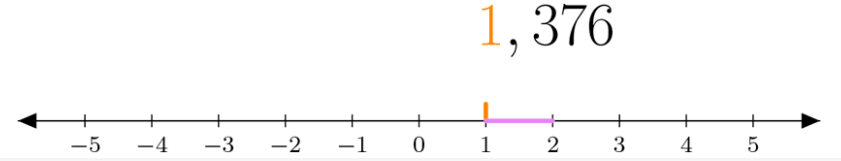
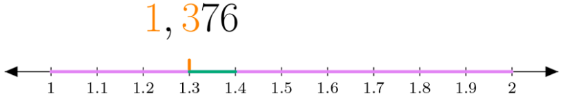
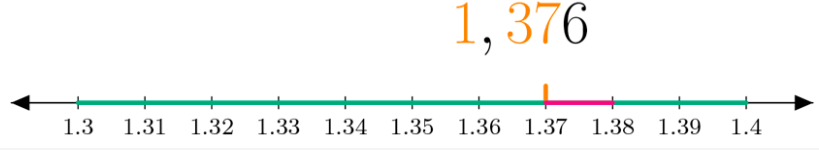
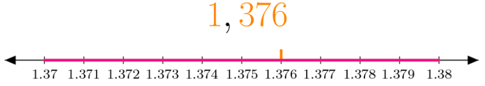

Los decimales en la recta numérica
Los números decimales se representan en la recta numérica.
Para representar un número decimal, se buscan los dos números enteros entre los que está comprendido; estos dos números determinan un segmento en la recta numérica. El segmento se divide en 10 partes iguales (décimas), o en 100 partes iguales (centésimas),... hasta llegar al número decimal dado.
Ejemplo:
Observa como se representa el número 1,376 en la recta numérica:
- Paso 1: Primero se ubican las unidades, que están al lado izquierdo de la coma. En este caso es solo una, nos desplazamos hasta el lugar del 1 en la recta numérica.

- Paso 2: El 3, que está en la parte decimal, no representa tres unidades, sino tres partes diez veces más pequeñas que la unidad (décimas). Se divide la siguiente unidad en diez partes iguales y se toman tres de estas divisiones. Observa que en la imagen anterior se resaltó el intervalo del 1 al 2 con morado. En la siguiente imagen puedes observar este mismo segmento ampliado para poder visualizar fácilmente las diez divisiones.

- Paso 3: El 7 representa partes diez veces más pequeñas que las que representaba el 3 (centésimas). Así que se divide el siguiente décimo en diez partes y se toman 7. Observa cómo se amplió el décimo de 1,3 a 1,4 resaltado con verde en la imagen anterior.

- Paso 4: El 6 representa partes diez veces más pequeñas que las centésimas (milésimas). Por esta razón se divide la centésima de 1,37 a 1,38 resaltada en fucsia, en diez partes y se toman 6 de ellas.

- Como no hay más números en la parte decimal, se ha terminado el proceso. Al hacer un alejamiento de la imagen se puede observar el resultado final.